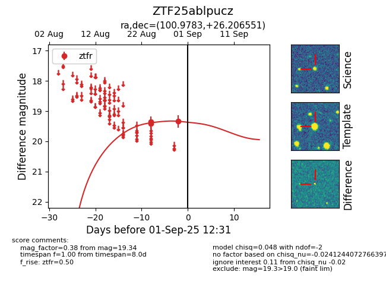

FINK: ZTF25ablpucz
Lasair: ZTF25ablpucz
ALeRCE: ZTF25ablpucz
ZTF25ablpucz (ztf,fink)
equatorial (ra, dec) = (100.9783,+26.20655)
galactic (l, b) = (188.5487,+10.08766)

last ztfr=19.34
3 ztfr detections